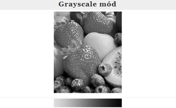
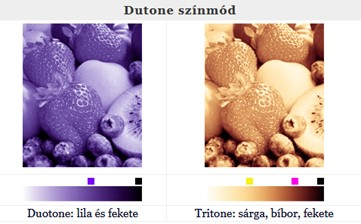
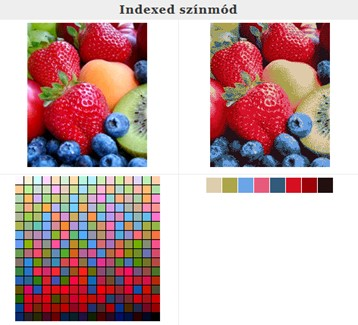
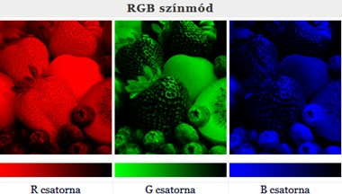
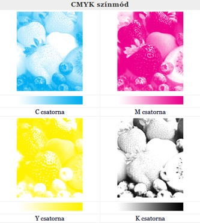

A monitor fényereje egy adott érték: általában 50-300 cd/m2, amit a berendezés meg tud jeleníteni. Maximális fényerő esetén a monitor képe fehér, nulla fényerő esetén fekete. Minden pixel fényessége változtatható a maximum és minimum között, mindegyik pixelnek változtatható külön-külön az R, G, B értéke, – így keletkezik a színes kép. A monitort videokártya vezérli. A képernyőre eső külső fény (napsugár, lámpa) csökkenti a láthatóságot, az észlelt fényerőt és a színek ragyogását. A kezdeti kijelzők még csak monokróm (egyszínű) berendezések voltak. Az RGB színfelbontás fontos adata a színmélység (vagy bit-mélység, color-depth).
Minden egyes pixel fényerősségének változását a tár bitjeinek száma (n) határozza meg. Régebben n= 1, 2, 4, 6 ma leggyakrabban 8 bitet (1 Byte-ot) használunk alapszínenként, ezt True-color-nak is nevezik. A 3 alapszínből 2n intenzitáslépcső nyerhető, az összes színingerkombináció száma: 2^(3*n)
A fényerő a nulla és a maximum között változik, és e határok között diszkrét (nem folytonos) értékeket vehet fel. A kisebb színfelbontás nagyobb lépésközt jelent a szélső értékek (0 és max.) között, a nagy színfelbontás pedig kisebb, finomabb változást.
Színmódok
Világszerte az egyik legelterjedtebb fényképfeldolgozó és képszerkesztő szoftver az Adobe Photoshop, különféle színmódokat használ, attól függően milyen célra (nyomtatás, internet) készül a kép, és milyen méretű képfájlra van szükség.
Mindössze 1 bitet használ egy kép megjelenítésére: a képpont vagy fehér vagy fekete. A színinformáció elvész, a képminőség sem jó, („grízes”) de így keletkezik a legkisebb méretű képfájl.
Az alábbi 3 ábrán minden színt a fehér-fekete helyettesíti, csak mintázatukban különböznek:
1. a közepesnél világosabb árnyalatok fehérek, az annál sötétebbek feketék
2. szabályos (raszteres) elrendezésű fekete pontok, melyek a sötétebb képrészeken sűrűbben helyezkednek el
3. szabálytalan elrendezésű fekete pontok, melyek a sötétebb képrészeken sűrűbben helyezkednek el
A szürkeskála (grayscale) a fekete és fehér között max. 256 árnyalatot tartalmazhat. A pixelenként 8 bit információ tónusában helyes, de színek nélküli képet eredményez. Más szóhasználat szerint: akromatikus kép. A színskála itt a halványszürkétől a feketésszürkéig (általánosságban fehértől a feketéig) tart.
Mely lehet monotone, tritone ill. quadtone is – egy, két, három ill. négy színből összetett tónusos kép. Nem a valós színekből álló, de színes árnyalatos kép. A fotók alatt a színskála és az ahhoz felhasznált 2 ill. 3 szín. Ezt a színmódot a nyomtatásban használják, ezért a fehér nincs „megadva”, az értelemszerűen a fehér papír.
Egy színes képből maximum 256 (8 bit) színből álló képet konvertál, vagyis a képet 256 vagy kevesebb színre redukálja. Ha ennél több szín van a képen, akkor az árnyalatot a legközelebbi színárnyalattal helyettesíti. Minden színnek sorszáma van 0-255 között, innen az indexed elnevezés. Mindössze egy színcsatornát használ, ezért kisméretű képfájl keletkezik, de csak számítógépes környezetben (pl. interneten) megfelelő a minősége, nyomtatásban nem.
Minden alapszínre (vörös, zöld, kék) egy színcsatornát használ, ma leggyakrabban 8 bitet csatornánként. A színskála a fekete és a tiszta szín között húzódik. Mennél élénkebb színű egy folt az adott csatornán, annál nagyobb intenzitású ott az alapszín, a sötét foltokon annál kisebb. Pl. az eper színében szinte semmi zöld sincs, csak a csillogó részeken, az őszibarackban sok a vörös és a zöld.
Minden alapszínre (ciánkék, bíborvörös, sárga, fekete) egy színcsatornát szimulál, melyet a kép nyomdai előkészítése során használnak. A legtisztább CMYK színek nem érik el az RGB színek telítettségét. Minél sötétebb egy folt az adott csatornán, annál több kell abból az alapszínből, a világos foltokon annál kevesebb. Pl. az eper színében szinte semmi ciánkék sincs, az áfonyában annál több, az őszibarackban sok a sárga, a többi színből csak kevés. Ez a színmód rendkívül elterjedt a színes nyomtatásban.
Eszközfüggetlen színmód, három színcsatornát szimulál, L*a*b* koordinátákkal azonosítja a színeket. Értelmezése 3 dimenzióban lehetséges, ahol a függőleges tengelyen a
– L (Luminance, analóg a világosság érzetével), gyakorlatilag egy szürkeárnyalatos kép.
– Az a és b koordináták az erre merőleges síkban helyezkednek el.
Az a koordináta a vörös-zöld, a b pedig a sárga-kék tartalmat jelzi.
A rendszer origója, ahol a három koordináta metszi egymást, egy közepes szürke.
Az eper színében sok a vörös és a sárga, az áfonyáéban a kék. Ahol szürkét látunk pl. az a csatornán, ott a vörös-zöld színpárból semmi nincs, de van (vagy lehet) a másik két csatorna színeiből.